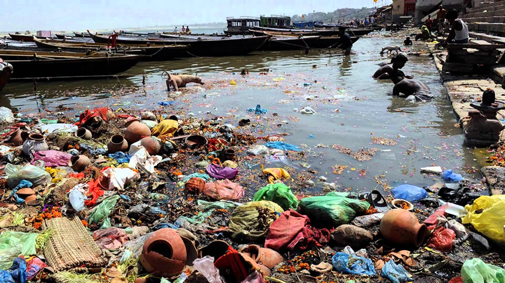

Home
What is water pollution and why is it importaint
"Water pollution is the contamination of water bodies (e.g. lakes, rivers, oceans, aquifers and groundwater)."[1] It is especially hard to stop because of how easily a contaminent can be introduced, and that it is very difficult to remove, especially from large bodies of water. Water pollution effects everyone, even if you do not live in an area where it is expected to exist. This is because, especially in the ocean, water pollution can easily spread to other bodies. For example, after the 2012 Japan Earthquake, debris floated all the way across the pacific to the west coast of most North America.[2]
[1] "Water Pollution." Wikipedia. Wikimedia Foundation, 02 May 2017. Web. 15 May 2017. [2] Seattle, Reuters In. "Japanese Tsunami Debris Will Continue to Wash up on US Shores, Expert Says." The Guardian. Guardian News and Media, 17 Mar. 2015. Web. 15 May 2017.
Jack Christensen

Jack Christensen is a senior at Serra High School. He is concerned with water quality because water is a right that all people should have, and the lack of clean, safe water is a hazard for health. Water is a neccessary part of life and the lack of it is one of the most dangerous outcomes that a population could have. Water is pollution is hard to remove once added, and the spread of it can be very dangerous for life in many areas
Andrew Garcia
Andrew Garcia is a high school senior concerned with the rapid decay of water quality and the threat of rising water levels due to climate change. As someone who has always grown up alongside a coast, the quality of water and the effect it has on different ecosystems and estuaries has become a big concern. Its easy to look at faraway instances of pollution and not care, but it is critical to remember that when these issues crop up, it affects everybody, especially those of us living in an area like the Bay Area.
Charlie Dowden
Charlie Dowden is a senior at Serra High School. He really likes Pete Townshend lyrics which is why he is interested in this project. A significant amount of his songs are about water. Water is also a vital right that all people should be able to reach.